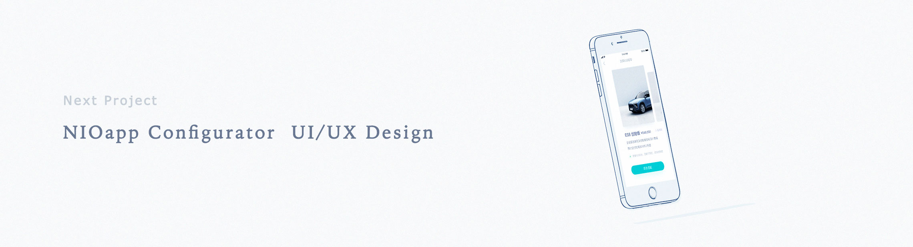

WORK DIARY
日报 查阅 管理
日报&周报
Toolkit内置应用日报&周报系统，提供给普通员工和管理员工不同权限的使用方式。
需求分析，交互/视觉设计。
2018.09
用户权限
应用根据需求将分配两种不同的权限用户，一种是管理用户一种是普通用户，管理用户将拥有查看普通用户日志的权限，并可以根据用户问题即时反馈或给予帮助，管理用户只有查看下属员工的权限，管理用户也将作为被管理者被上一级权限所查看，并且可以写日志查看自己往起日志，所有用户都可补写最近一天的日志。
用户行为流程图
根据不同权限的用户故事绘制流程图
管理用户：1. 查阅他人日志 〉评论&解决问题 / 2. 查阅自己历史日志 〉创建今天日志 〉补写昨天日志
普通用户：1. 查阅自己历史日志 〉创建今天日志 〉补写昨天日志
如何提升用户使用效率？
以用户为中心做产品设计，所有的功能体验都围绕用户需求、用户感知而展开，从而能够很好地提升用户满意度。
准确的告诉用户的当前定位，所处角色和所要完成的行为
以更直接简单的方式展示内容
当前有两种用户角色，管理者和被管理者。用户故事：作为一个管理者我需要每天查看员工日志内容从而了解员工工作情况及人员状态。同时作为一个管理者或被管理者我需要每天记录工作内容及计划形成工作日志给予上级汇报工作内容及问题反馈。
消除障碍，减少视觉上的混乱，消除不必要的内容，提升用户注意力。
用户日志推送：分类定位直接显示位置/状态，时间筛选器：快速定位到目标日志，内容搜索：根据用户搜索内容筛选日志列表。
CTA(行为召唤)入口
即是创建/补写按钮，又是草稿箱的载体，将引导，状态，内容在一个区域根据用户情境显示出来，利用时间轴分割日志内容。
CTA按钮用于操作。文本应该简短，并以一个动词开始。站在用户的角度思考动词具体表达，并清楚地说明如果用户点击它会得到什么。
给它一个强调的颜色和大小。并给按钮创造足够的留白空间。
避免选择过载，分类显示，这里创建比补写价值稍高一些，入口展现在时间轴上能够更直观的显示昨天和今天的日志状态，按时间顺序创建应位于补写前方。
创建和补写入口都是进入编辑日报页面，当编辑完成未提交时会提醒用户是否保存草稿或者用户自己保存草稿，当处于已编辑未提交状态下，历史状态会显示编辑状态，可继续填写提交日志，提交完成后时间轴显示已提交状态。
此项目内容无法公开展示

